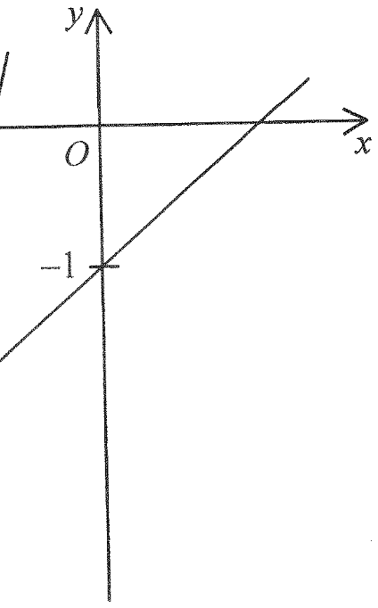

QUESTION2017 Paper 2 · Q23
In the figure, the equations of the straight lines \(L_1\) and \(L_2\) are \[x+my=n \quad\text{and}\quad x+py=q\] respectively, where the slopes of both lines are positive. Which of the following are true?
I. \(m < p\)
II. \(n > q\)
III. \(n+m < p+q\)
(Tick the correct option — the figure shows the two lines crossing the line \(y=-1\) at different points.)
Original Figure

PART AReading the Gradients of \(L_1\) and \(L_2\)
Rewrite each equation in slope-intercept form to read off the slope and the \(x\)-intercept.
PART BComparing the \(x\)-intercepts (\(n\) vs \(q\))
Although both lines pass through the same left-hand region, the figure shows \(L_1\) crossing the \(x\)-axis to the right of where \(L_2\) crosses it.
PART CPosition at the line \(y=-1\) : Is \(n+m<p+q\) ?
Substitute \(y=-1\) into each equation to find where each line meets the horizontal line \(y=-1\), then use the figure to compare the two \(x\)-coordinates.
Summary — Final Answer
- I. TRUE — slope of \(L_1\) smaller than slope of \(L_2\) \(\Rightarrow -\frac1m<-\frac1p \Rightarrow m<p\).
- II. TRUE — \(x\)-intercept of \(L_1\) is to the right of that of \(L_2\) \(\Rightarrow n>q\).
- III. FALSE — at \(y=-1\), \(L_1\) gives \(x=n+m\), \(L_2\) gives \(x=p+q\), and the figure shows \(n+m>p+q\).
- Only I and II are true.